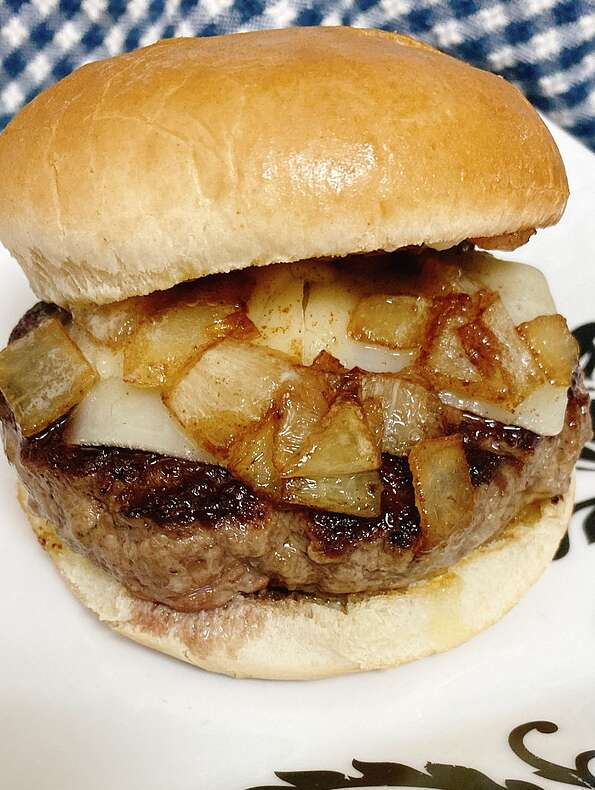

Hamburger
Document

Description
A delicious looking butter burger with everything you would need to get you throughout the day and on to your next adventure!
Served fresh off the grill by our world famous chefs made with the most fresh ingredients
Ingedients
For Onions:
- 1 tablespoon butter
- 2 teaspoons olive oil
- 1/2 cup chopped onion
For Burger:
- 1 pound 90% lean ground beef
- 2 teaspoons Italian seasoning (such as Trader Joe's 21 Seasoning Salute)
- 1 tablespoon ghee (clarified butter)
- 2 slices white Cheddar cheese
- 2 (2 ounce) hamburger buns
- 2 tablespoons butter
Steps
- Melt butter in a saucepan over medium heat, then add olive oil. Allow butter to brown. Reduce heat to low and add onion. Cover and cook over very low heat, stirring occasionally, until very soft, about 20 minutes. You do not want to caramelize the onion.
- Meanwhile, season ground beef with Italian seasoning and shape into 2 hamburger patties.
- Melt ghee in a skillet over medium-high heat. Cook hamburger patties, about 3 minutes per side. Add cheese onto each patty and allow to melt.
- Meanwhile, preheat the oven's broiler and toast buns until crisp, 1 to 2 minutes.
- Set hamburger patties on the bottom buns and add add sauteed onions on top. Spread 1 tablespoon butter across the freshly toasted top bun.